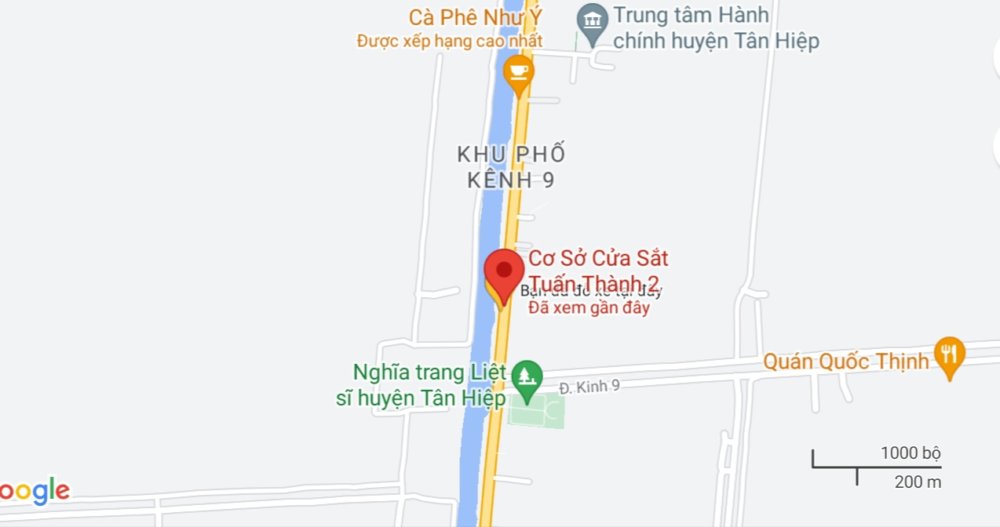

Chúng tôi là ai ?
Cửa sắt Tuấn Thành từ lâu đã được biết tới trong lòng thị trấn Tân Hiệp, chúng tôi tự hào rằng mình là một trong những xưởng cửa tốt nhất nơi đây. Được thành lập từ 17 năm về trước, từ một xưởng cửa sắt nhỏ vươn lên trở thành cái tên với nhiều người biết, Cửa sắt Tuấn Thành giờ đây còn sản xuất các loại cửa khác như, cửa Xingfa, cửa nhôm cỏ, và các loại hàng rào lưới B40, hàng rào sắt, hàng rào nhôm. Sản phẩm chúng tôi luôn mang đến sự khác biệt ưng ý cả về giá cả lẫn tiêu dùng.
Chất lượng là danh dự, trải nghiệm của bạn là tiêu chuẩn !
Chủ xưởng

Với hơn 24 năm kinh nghiệm trong nghề, ông Nguyễn Quí Thìn luôn tự tin vào tay nghề của mình cũng như luôn cẩn thận từ những chi tiết nhỏ nhặt như những con ốc vít, đến những phần việc quan trọng như: lấy số đo, tư vấn thiết kế,... Chính sự dày dặn đã làm cho khánh hàng tin tưởng vào Cửa sắt Tuấn Thành.
"Kinh nghiệm là thứ không thể học bằng cách nhìn, nhưng bằng sự rèn dũa và miệt mài !"
Xưởng cửa
Một không gian làm việc chuyên nghiệp là điều không thể thiếu cho sự phát triển của danh nghiệp. Xưởng cửa chúng tôi luôn bảo đảm những chiếc cửa được trau truốt tỉ mĩ với những trang thiết bị hiện đại. Thật vậy, từ những chiếc máy hàn đến máy cắt sắt, máy cắt Xingfa,... luôn luôn có mặt để phục vụ công việc.
( tại xưởng Cửa sắt Tuấn Thành )
Địa chỉ
Cửa sắt Tuấn Thành hiện toạ lạc ở kinh 9, thị trấn Tân Hiệp, tỉnh Kiên Giang.
( số nhà 2204, quốc lộ 80, cách cầu kinh 9 khoảng 200m về phía Rạch Giá )
Nhấp link để xem vị trí trên google map: Link
